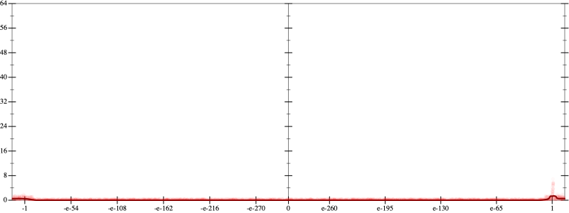
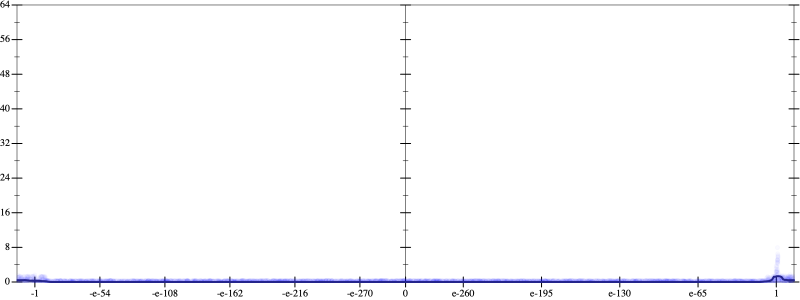
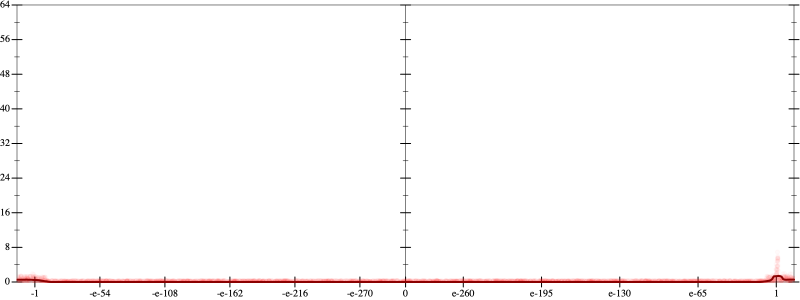
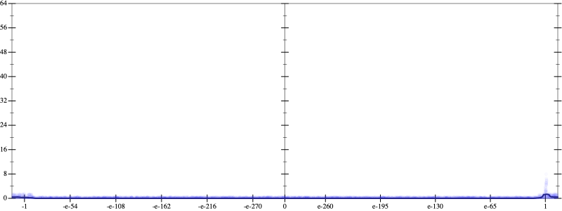

Initial program 0.0
\[\left(\left(\left(\left(1.0 + -5.0 \cdot x\right) + 5.0 \cdot \left(x \cdot x\right)\right) + -1.666667 \cdot \left(\left(x \cdot x\right) \cdot x\right)\right) + 0.208333 \cdot \left(\left(\left(x \cdot x\right) \cdot x\right) \cdot x\right)\right) + -0.008333 \cdot \left(\left(\left(\left(x \cdot x\right) \cdot x\right) \cdot x\right) \cdot x\right)\]
Applied simplify0.1
\[\leadsto \color{blue}{\left(x \cdot -5.0 + 1.0\right) + \left(\left(\left(x \cdot x\right) \cdot \left(x \cdot x\right)\right) \cdot \left(-0.008333 \cdot x + 0.208333\right) + \left(x \cdot x\right) \cdot \left(-1.666667 \cdot x + 5.0\right)\right)}\]
- Using strategy
rm Applied pow20.1
\[\leadsto \left(x \cdot -5.0 + 1.0\right) + \left(\left(\left(x \cdot x\right) \cdot \color{blue}{{x}^{2}}\right) \cdot \left(-0.008333 \cdot x + 0.208333\right) + \left(x \cdot x\right) \cdot \left(-1.666667 \cdot x + 5.0\right)\right)\]
Applied pow20.1
\[\leadsto \left(x \cdot -5.0 + 1.0\right) + \left(\left(\color{blue}{{x}^{2}} \cdot {x}^{2}\right) \cdot \left(-0.008333 \cdot x + 0.208333\right) + \left(x \cdot x\right) \cdot \left(-1.666667 \cdot x + 5.0\right)\right)\]
Applied pow-prod-up0.0
\[\leadsto \left(x \cdot -5.0 + 1.0\right) + \left(\color{blue}{{x}^{\left(2 + 2\right)}} \cdot \left(-0.008333 \cdot x + 0.208333\right) + \left(x \cdot x\right) \cdot \left(-1.666667 \cdot x + 5.0\right)\right)\]
- Using strategy
rm Applied distribute-lft-in0.0
\[\leadsto \left(x \cdot -5.0 + 1.0\right) + \left(\color{blue}{\left({x}^{\left(2 + 2\right)} \cdot \left(-0.008333 \cdot x\right) + {x}^{\left(2 + 2\right)} \cdot 0.208333\right)} + \left(x \cdot x\right) \cdot \left(-1.666667 \cdot x + 5.0\right)\right)\]
Applied associate-+l+0.0
\[\leadsto \left(x \cdot -5.0 + 1.0\right) + \color{blue}{\left({x}^{\left(2 + 2\right)} \cdot \left(-0.008333 \cdot x\right) + \left({x}^{\left(2 + 2\right)} \cdot 0.208333 + \left(x \cdot x\right) \cdot \left(-1.666667 \cdot x + 5.0\right)\right)\right)}\]
 
